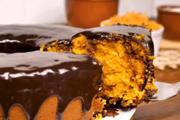

Receita bolo de Cenoura

Descrição:
O bolo de cenoura é um bolo doce com cenoura misturada dentro da massa, e geralmente com cobertura de chocolate.
Um bolo de chocolate fofinho, rápido e simples de fazer junto com uma xícara de café às vezes é tudo que a gente precisa para curar onde dói em uma tarde chuvosa.
Ingredientes:
Massa do bolo:
- 3 cenouras médias (250g)
- 4 ovos
- Meia xícara (chá) de óleo
- 2 xícaras e meia (chá) de farinha de trigo
- 2 xícaras (chá) de açúcar
- 1 colher (sopa) de fermento em pó
Cobertura de Chocolate:
- 1 Leite Condensado (lata ou caixinha) 395g
- 1 colher (sopa) de manteiga
- Meia xícara (chá) de Chocolate em pó
- Meia xícara (chá) de chocolate granulado
Modo de preparo:
Massa do Bolo:
- Em um liquidificador, bata as cenouras, os ovos e o óleo.
- Despeje a mistura em um recipiente e misture o açúcar e a farinha de trigo peneirada com o fermento.
- Coloque em uma fôrma retangular (20 x 30 cm) untada, e leve ao forno médio (180°C), preaquecido, por 40 minutos.
- Enquanto isso, prepare a cobertura de brigadeiro.
Cobertura de Chocolate:
- Em uma panela coloque o Leite Condensado, o chocolate em pó e a manteiga, leve ao fogo baixo, mexendo sempre, até começar a desprender da panela.
- Despeje ainda quente sobre o bolo, distribua o chocolate granulado e deixe esfriar.